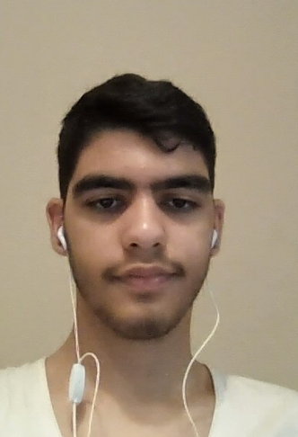

Hussein Srour's Resume
Summary
Motivated first-year web development student at the Lebanese University, with a strong
foundation in coding and a passion for building innovative web solutions.
Eager to apply my skills and knowledge in a dynamic environment to contribute to
impactful projects and grow as a developer.
Education
Here's my education stuff
- Studied in school till Third secondary
- Finished 1st year Cs in the Lebanese University
- Taking Angela Yu's web development bootcamp rn
- I taked 17 in the Third secondary
- School Al Mustafa
Wrok experience
Don't have that much experience
- worked in a football academy for 2 years
- It was in my village
- Only 2 days a week
- worked with Al Mahdi Scouts a little bit
Skills
- Good at football
- Learned C language
- Good at english
This is me

About Me
Contact Me